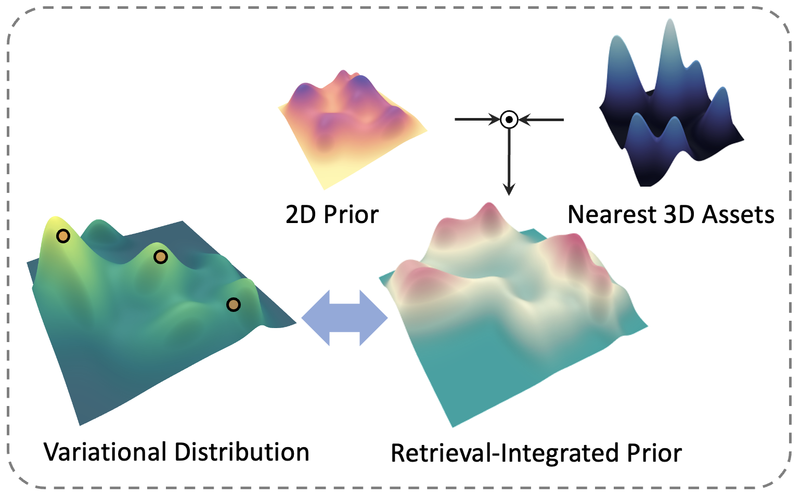
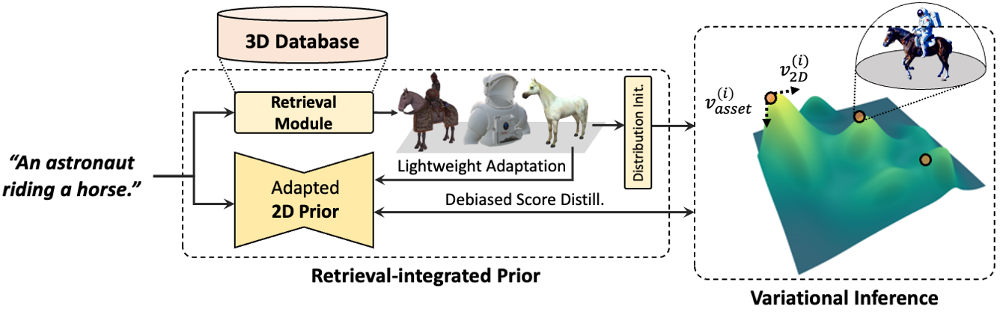

For text-to-3D generation, we propose to leverage the retrieved 3D asset to incorporate its geometric prior in the variational objective and adapt the diffusion model's 2D prior toward view consistency, resulting in facilitating generation of high-quality 3D assets with added controllability and negligible training cost.
Motivation
Our key motivation is that 3D assets, which are semantically aligned with a given text, become a minimal yet effective guidance of 3D geometries for SDS-based approaches. Then, ReDream can largely maintain the quality of the pre-trained 2D diffusion model, but also provide an effective geometric prior.
Abstract

Text-to-3D generation has achieved significant success through incorporation of powerful 2D diffusion models, but is currently with problem such as view inconsistency (AKA Janus problem) and limitation in quality and diversity of 3D data viable for training. To sidestep these trade-offs, we explore a retrieval-augmented approach tailored for score distillation, dubbed ReDream. We leverage the retrieved asset to incorporate its geometric prior in the variational objective and adapt the diffusion model's 2D prior toward view consistency, achieving drastic improvements in both geometry and fidelity of generated scenes. We conduct extensive experiments to demonstrate that ReDream exhibits superior quality with increased geometric consistency.
Overall Framework
Given a prompt c, our network retrieve the nearest neighboring assets from the 3D database. With these assets, we perform initialization of an variational distribution for incorporation of robust 3D geometric prior, as well as conducting lightweight adaptation of 2D prior model for probability density across viewpoints.

Qualitative Results
Citation
Acknowledgements
The website template was borrowed from Michaël Gharbi.